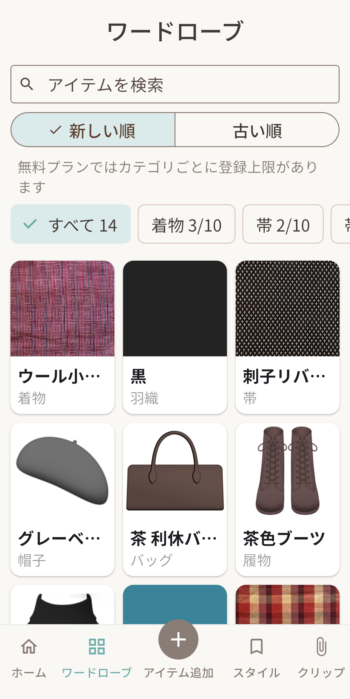
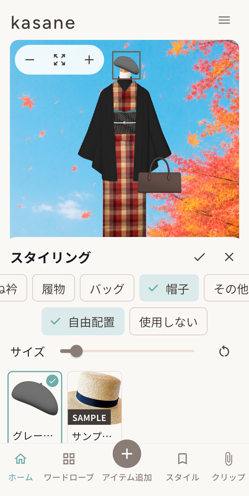
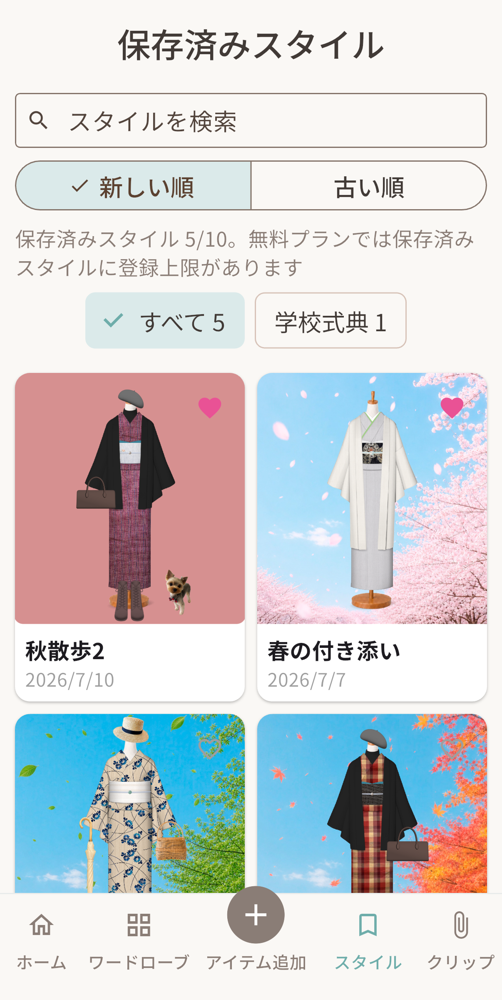

01
手持ちのアイテムを管理
着物・帯・帯揚げ・帯締めなどを写真で登録。検索やカテゴリ分けで、手持ちを見返せます。
ABOUT
クローゼットにある着物や帯をすべて覚えておくことも、コーディネートのたびに広げて比べることも大変です。kasaneは、そんな着物ならではの困りごとを、スマートフォンで少し手軽にします。
FEATURES

01
着物・帯・帯揚げ・帯締めなどを写真で登録。検索やカテゴリ分けで、手持ちを見返せます。

02
登録したアイテムをトルソーに重ねて、色や柄の組み合わせ、全体のバランスを確認できます。

03
作ったコーディネートに名前を付けて保存。あとから見返したり、画像として共有したりできます。
HOW TO USE
着物や帯を撮影するか、写真ライブラリから選びます。
トルソーに重ねながら、帯や小物を選びます。
完成したスタイルを保存し、次のお出かけに役立てます。
PRIVACY
ユーザーが登録した着物・帯・小物の情報と画像は、端末内に保存されます。バックアップ機能を使って、自分でデータを書き出すこともできます。
SUPPORT
MORE ABOUT KASANE